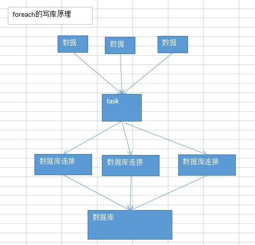
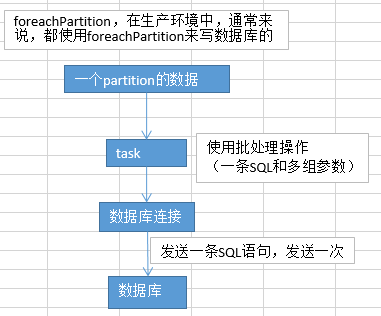

16.算子调优之使用foreachPartition优化写数据库性能
默认foreach：

默认的foreach的性能缺陷在哪里？
首先，对于每条数据，都要单独去调用一次function，task为每个数据，都要去执行一次function函数。 如果100万条数据，（一个partition），调用100万次。性能比较差。 另外一个非常非常重要的一点 如果每个数据，你都去创建一个数据库连接的话，那么你就得创建100万次数据库连接。 但是要注意的是，数据库连接的创建和销毁，都是非常非常消耗性能的。虽然我们之前已经用了数据库连接池，只是创建了固定数量的数据库连接。 你还是得多次通过数据库连接，往数据库（MySQL）发送一条SQL语句，然后MySQL需要去执行这条SQL语句。如果有100万条数据，那么就是100万次发送SQL语句。
以上两点（数据库连接，多次发送SQL语句），都是非常消耗性能的。
foreahPartition：

用了foreachPartition算子之后，好处在哪里？
1、对于我们写的function函数，就调用一次，一次传入一个partition所有的数据 2、主要创建或者获取一个数据库连接就可以 3、只要向数据库发送一次SQL语句和多组参数即可
在实际生产环境中，都是使用foreachPartition操作；但是有个问题，跟mapPartitions操作一样，如果一个partition的数量真的特别特别大，比如真的是100万，一下子进来，很有可能会发生OOM，内存溢出的问题。
一组数据的对比：生产环境，一个partition大概是1千条左右 用foreach，跟用foreachPartition，性能的提升达到了2~3分钟。